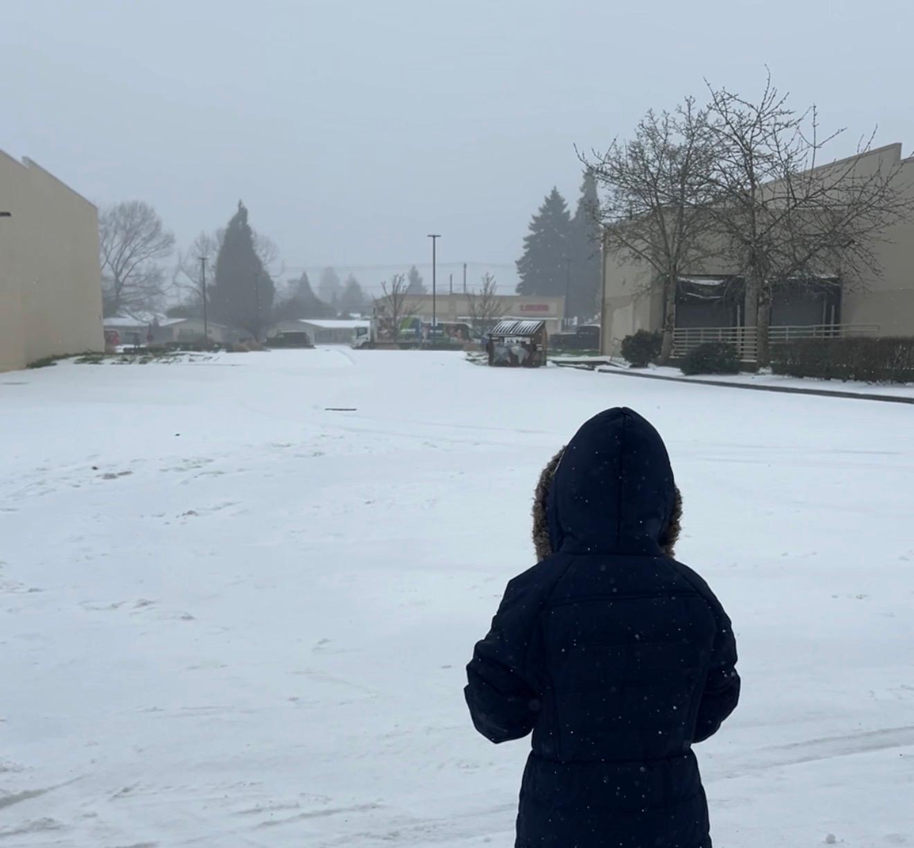

Yesid Fernando Cepeda | WDD 130.

Hello everyone! 👋 My name is Yesid Fernando Cepeda. I am originally from beautiful Colombia 🇨🇴, but I currently live in Keizer, Oregon 🌲. I have a deep passion for technology and how it can be used to solve real-world problems 💻🚀. On a personal note, I am happily married and the proud father of a 11-year-old boy 👨👩👦. Our family team is completed by our 4-year-old dog, who always keeps things fun at home 🐕. My biggest goal right now is to finish my studies and fully establish my career as a software developer 🎓. I am highly motivated to keep learning and building tools so I can put my knowledge at the service of everyone and make a positive impact 🌍🤝. It is great to meet you all!